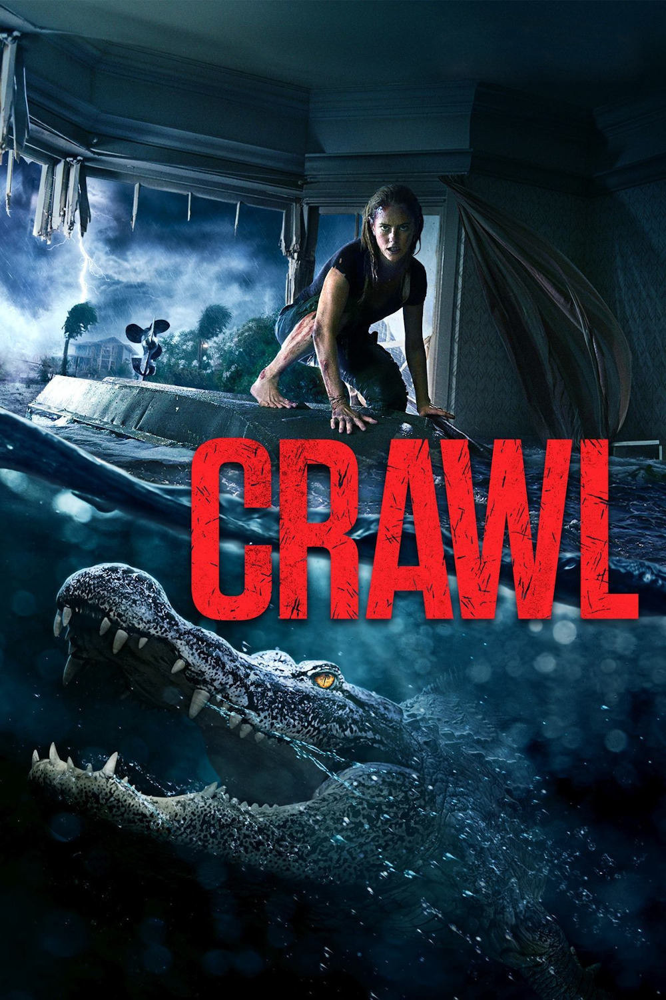

Мировая премьера: 12 июля 2019
Слоган: Если тебя не убьёт ураган, это сделают они.
Сюжет: На Флориду обрушивается ураган 5-й категории, всех жителей эвакуируют, но Хейли бросается на поиски своего отца, который перестал выходить на связь. Она находит его тяжелораненым в подвале их старого дома, откуда он не может выбраться. Шторм усиливается, вода прибывает, затопляя всё вокруг. Но это меньшее, чего им стоит бояться. Вскоре Хейли обнаруживает, что в воде засел огромный аллигатор.
Режиссёр: Александр Ажа
В ролях:
| Кая Скоделарио | Хейли Келлер |
| Барри Пеппер | Дейв Келлер |
| Морфидд Кларк | Бет Келлер |
| Росс Андерсон | Уэйн Тейлор |
Бюджет: $ 14 млн.
Кассовые сборы в США: $ 39 млн.
Кассовые сборы в мире: $ 92 млн.
Продолжительность: 1 ч. 23 мин.
Рейтинг: 6.1